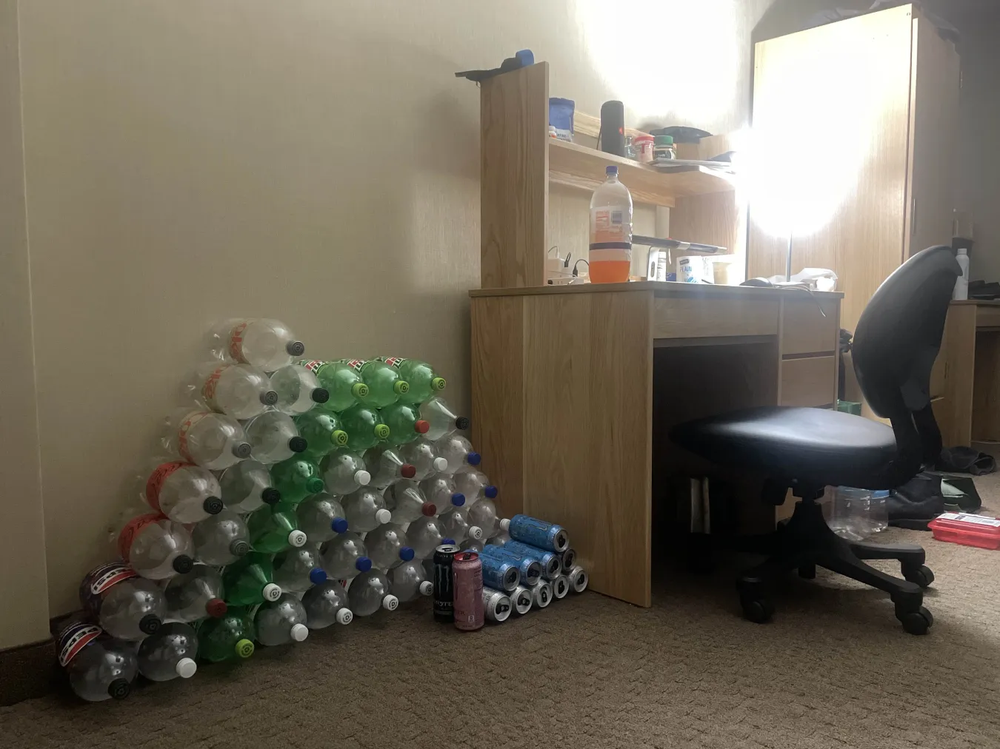

Hi, my name is Anthony Tian. I enjoy diet soda and saving the bottles after finishing them. Each 2-liter cylinder is another lego that I add to my pyramid, sitting next to my desk. Last semester I had a collection too, of roughly 37 bottles, but they were cleaned out and recycled by the cleaners who checked my room over winter break–– unbelievable! But it's okay, we're back with a vengeance. The semester is not half over and we're at 40+ already. Earlier today, I've just restocked five more bottles: Diet Coke, Diet Coke Caffeine Free, and Sprite Zero; which I'll get started on once I finish this remaining swig of Sunkist and A&W. Here's a picture of the current progress.
